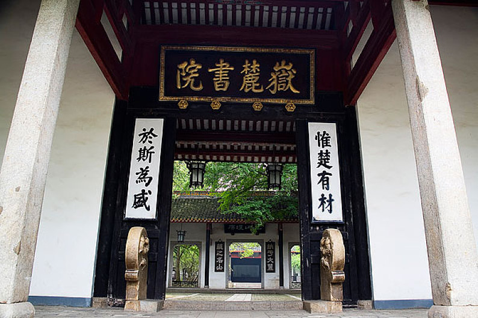

湖南大学计算机学院 408 统考备考信息站：官方复试线、统考名额、四科分值、备考节奏、参考书目，一站查清。目标 2027 年 12 月初试、2028 年 9 月入学。

以下为湖南大学计算机学院 2026 年官方公布的最近完整数据（2026 年 3 月发布）。2028 考研招生简章预计 2027 年 9 月发布，现阶段备考请以本组数据为基准。
| 专业代码 | 专业名称 | 总分线 | 单科(100分) | 单科(>100分) |
|---|---|---|---|---|
| 081000 | 信息与通信工程 | 364 | 50 | 75 |
| 081200 | 计算机科学与技术 | 365 | 50 | 75 |
| 085400 | 电子信息（专硕） | 368 | 50 | 75 |
| 专业代码 | 专业名称 | 学习方式 | 统考名额 |
|---|---|---|---|
| 081000 | 信息与通信工程 | 全日制 | 21 |
| 081200 | 计算机科学与技术 | 全日制 | 25 |
| 085400 | 电子信息 | 全日制 | 103 |
硕士学制 3 年。全日制学习，毕业获学位证书与学历证书。
学硕 8000 元/年，全日制专硕 12000 元/年，非全日制电子信息 15000 元/年。
学业奖学金一等 1 万/年、二等 0.5 万/年、三等 0.3 万/年；另享国家助学金 0.6 万/年。
现场复试：机试（编程闭卷 100 分，120 分钟）+ 综合面试（150 分）。总成绩 = 初试 + 复试。
2025 年及以前湖大计算机初试专业课为自命题（866）数据结构，且电子信息按方向招生；2026 年起改为 408 统考，以下数据仅作难度参考，不能直接对照。
| 专业 / 方向（2024） | 总招生 | 推免 | 统考 | 复试线 | 备注 |
|---|---|---|---|---|---|
| 081200 计算机科学与技术 | 39 | 27 | 12 | 350 | 推免占比高，统考名额少 |
| 085400 电子信息·计算机技术 | 43 | 16 | 27 | 320 | 统考名额较多 |
| 085400 电子信息·软件工程 | 24 | 8 | 16 | 330 | 竞争中等 |
| 085400 电子信息·人工智能 | 14 | 4 | 10 | 340 | 规模较小 |
| 085400 电子信息·网络空间安全 | 11 | 3 | 8 | 335 | 名额少 |
教育部统一命题，涵盖四门专业基础课，总分 150 分：40 道单选题（每题 2 分，共 80 分）+ 7 道综合题（共 70 分），考试时长 180 分钟。全国同卷，命题风格稳定，近年已有 300 余所院校采用。
线性表、树与图、查找排序。入门必修，理解算法思路与复杂度分析。
数据表示、存储系统、指令系统、CPU、总线与 I/O。硬件基础，概念最密集。
进程管理、内存管理、文件与 I/O。与组成原理联动紧密，PV 操作为重点。
五层体系结构、TCP/IP、应用层协议。记忆点多，性价比高，后期可快速提分。
湖南大学计算机学院正分批将初试专业课从自命题（866）数据结构切换为全国统考 408。对 28 考研的同学来说，学院全部招生专业将统一为 408，信息更透明、备考更确定。
当前 2026 年 10 月，距 28 考研初试（2027 年 12 月下旬）约 14 个月。以下按"基础 → 强化 → 冲刺 → 复试"四段规划，408 建议全程主攻，政治英语数学按自己的底子并行安排。
四科各至少一轮精读 + 王道同步。目标：看懂教材、选择题正确率 60% 以上。
真题分类二刷三刷，大题解法成体系。目标：大题能独立写出完整思路与伪代码。
整套限时模拟，错题闭环，背诵记忆收尾。目标：模拟稳定在目标线以上 15–20 分。
保持编程手感（湖大有机试），准备简历与项目经历，练英语口语与专业面试表达。
408 是全国统考，备考资料完全公开。教材打底、王道系列主攻、真题定成败。
严蔚敏《数据结构（C语言版）》
唐朔飞《计算机组成原理》
汤小丹《计算机操作系统》
谢希仁《计算机网络》
王道系列：408 复习指导（四科各一册）+ 真题详解。覆盖全部考点，配套习题质量高，是绝大多数考生的主力资料。
408 有完整的全国统考真题，从近 5 年开始刷，先分类后整套。真题是把握命题风格与难度的唯一权威来源。
以教育部考试院发布的《计算机学科专业基础综合考试大纲》为准，每年 9 月更新。教材版本如有新版，以大纲对应章节为准。
点击展开查看答案。更多问题可在搜索框直接查询。
所有招生信息请以官方发布为准，谨防各类"内部渠道""保过班"骗局。
复试细则 · 拟录取名单 · 改考通知
复试基本分数线 · 招生简章 · 专业目录
网上报名 · 考试大纲 · 调剂系统
李老师 · 工作日咨询